These small projects have been created using the help of guided walkthrough project videos from internet sources and youtube channels such as Alex The Analyst and Siddhardhan and the data available on websites like kaggle.
The projects were made with the purpose of getting a perspective on the broad applications of machine learning, and to get some hands-on experience with the typical workflows that can be implemented in order to build the simplest predictive systems using available data.
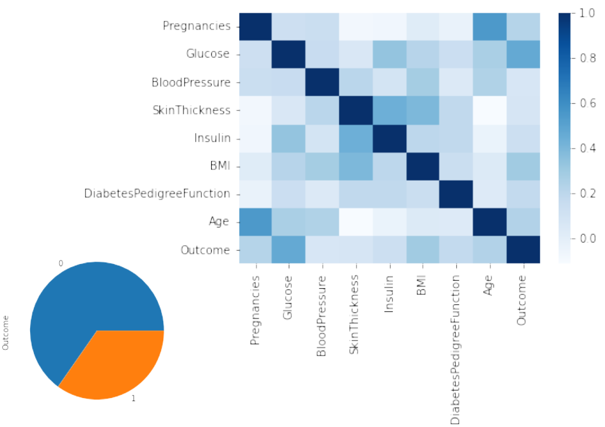
Diabetes is a major problem in India today. What medical parameters determine whether a person will be diagnosed with diabetes or not. Can we predict using machine learning, given the required parameters, whether a person will be diagnosed?
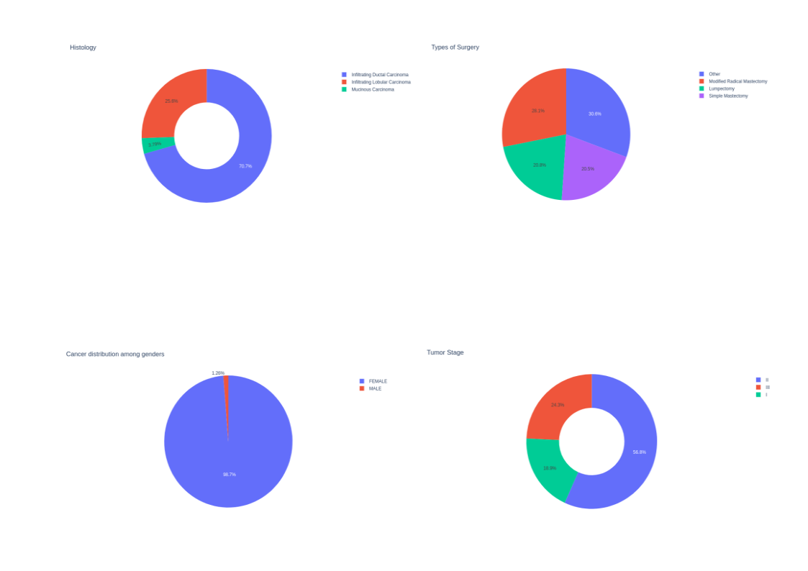
Cancer is another major disease which is often considered to be fatal once diagnosed. On what medical factors does the cancer depend. Can we determine using these parameters in Machine Learning models whether a person has chances to survive or not?
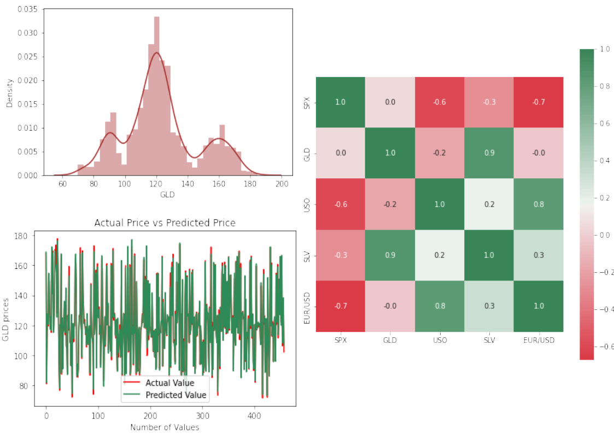
Gold is a very important commodity, specially in Indian culture and economy. Every day thousands of people buy gold for personal or trade purposes. Thus it becomes important to understand its price trend with time in order to gain profit from the gold market. So can we make use of machine learning models to predict the gold price at a given time?
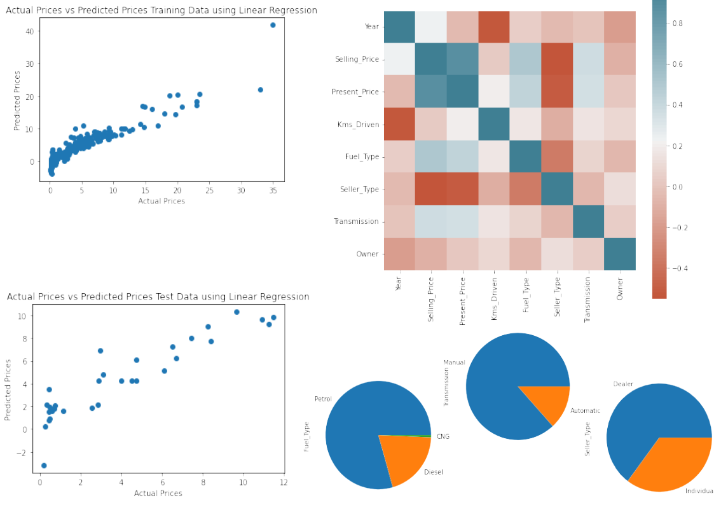
Cars are another important comodity in the modern age, specially in cities wherein it has become necessary for everyone to own a car. With thousands of people buying cars everyday it becomes an important question whether we can predict the car prices using Machine Learning models and how accurate the results will be as compared to the actual prices.
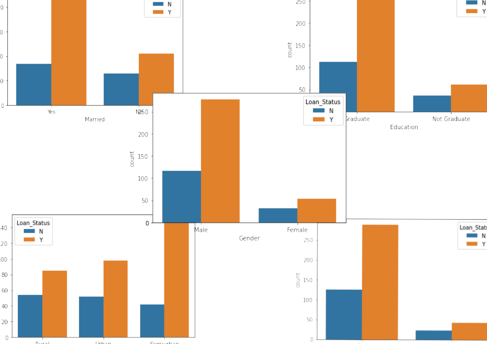
A lot of people depend on loan for varied purposes. Can we determine using Machine Learning the parameters that most affect the Loan Status for a particular person?
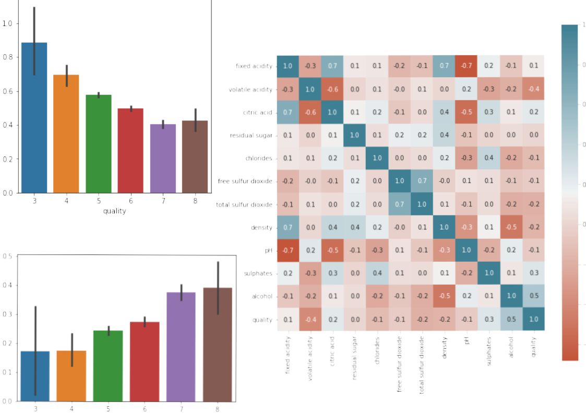
Wine is consumed by thousands of people all over the world. The quality of wine is a very important factor in its consumption. But can we determine the set of chemical parameters tha makes a fine wine?
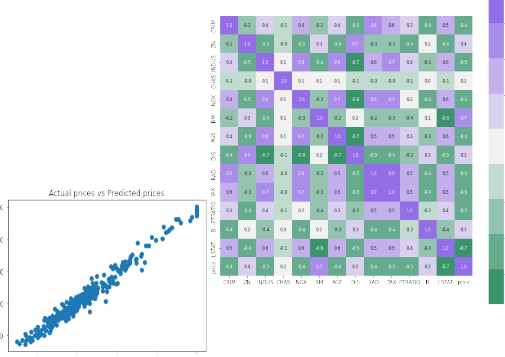
There are several factors that house prices depend on. The location, the neighboring area, basic amenties, facilities, open space, etc. But can we predict the house prices based on a prticular set of values for each of these parameters using Machine Learning prediction?
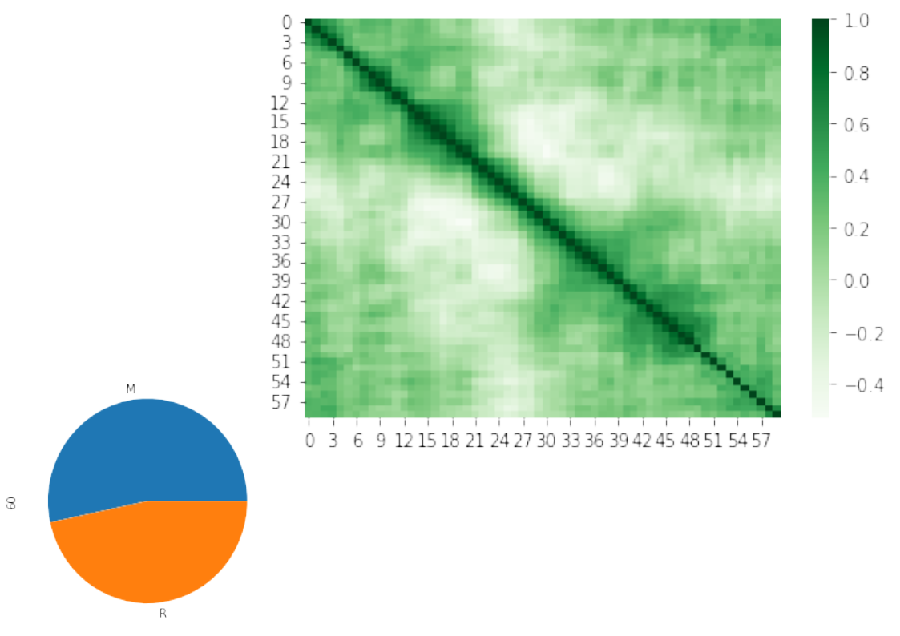
Sonar is a Sound Navigation and Resonance Device that is used to detect underwater objects using longitudinal waves. Using this device the ships can detect presence of any mines. But can we differentiate a mine from an ordinary rock by applying machine learning on existing data?
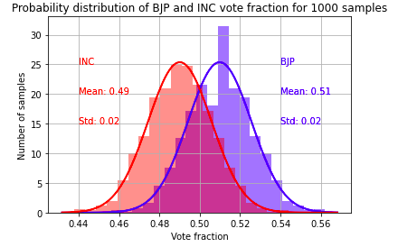
Can we predict accurate poll results by analysing only limited datasets of real surveys performed in Indian Election scenario? In this project, I tried to find just that by generating many datasets by using statistical methods surrounding one real dataset.
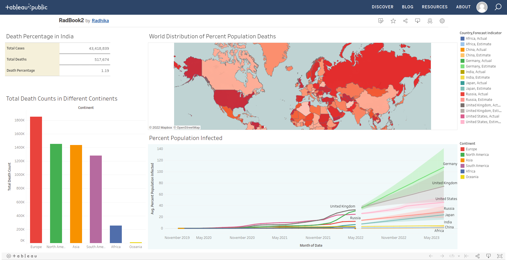
How did the recent pandemic of Covid-19 impact the entire worlda at large, and specifically India? In this project I make use of SQL to create queries out of the huge database, and Tableau to generate beautiful visualizations
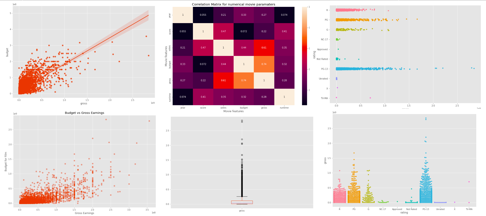
On what factors does the success of a typical movie depend? In this project, I have tried to answer this question by correlating important parameters of famous movies.

On what factors do the sales of bike of a particular company depend and how are they related? In this project I try to find just that using Visualization and Dashboards on Excel.